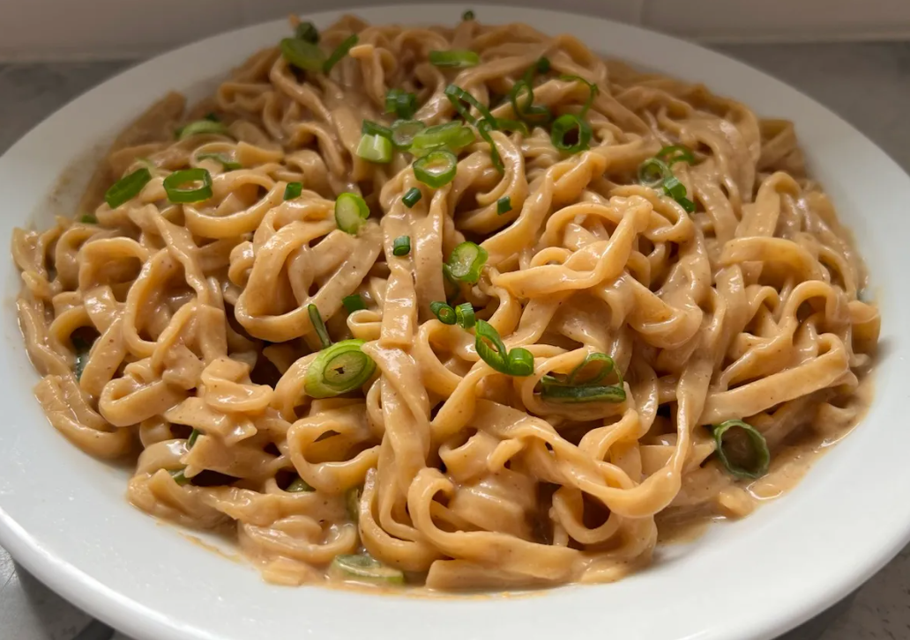

Home
Fuzhou peanut butter noodles

Description
Fuzhou peanut butter noodles, known as Bàn Miàn, are a beloved street food and home comfort dish from the
Fujian region of China. These noodles are coated in a creamy peanut sauce that's rich, slightly sweet,
and savory. It's a simple dish that delivers big flavor, often topped with soy sauce and sesame oil for
extra depth. This makes for a quick, satisfying meal when you want something nutty and flavorful.
Ingredients
- 1-2 bundles of choice of noodle (preferably wonton noodles)
- 2 tbsp. of smooth peanut butter
- 1 tbsp. of sesame paste
- 1-2 tbsp. of soy sauce
- 1 tsp. of sugar
- 1 tsp. of sesame oil
- 2-3 tbsp. of hot water
- 1 stalk of chopped green onions (scallions)
Steps
- Boil the noodles:
- Boil a pot of water for the noodles.
- Once the water is boiling, cook the noodles according to the package instructions or for 5 minutes
if no instructions are provided.
- Once done, drain the noodles and set them aside.
- Make the sauce:
- Combine peanut butter, soy sauce, sesame paste, sugar, and sesame oil in a bowl.
- Add hot water and stir contents until the sauce is smooth and slightly runny
- Mix the noodles with the sauce:
- Add the cooked noodles to the bowl of sauce.
- Mix until the noodles are evenly coated in sauce.
- Serve onto a plate:
- Transfer the noodles to a plate.
- Top with chopped green onions (scallions).
- Enjoy your peanut butter noodles! For the best, authentic Chinatown experience, eat with wooden
chopsticks.